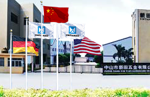

中山市新田五金有限公司，坐落于中国厨房电器五金产业基地中山南头，从1998年成立至今，公司始终秉承“专业、精细、超越、共享”的核心理念，凭借优异的产品质量和完善的售后服务体系，经过十多年的发展，已经成为目前国内厨房五金行业中产品规格型号最齐全、综合实力最强的拉篮、水槽专业生产基地之一，公司拳头产品拉篮和水槽畅销海内外。目前厂房占地面积40余亩，员工总人数500多名，并于2012年顺利通过了ISO9001-2008质量管理体系认证公司知名品牌“德美”先后被评为“中国著名品牌”、“中国消费者放心购物质量可信产品”等荣誉称号。
我公司集研发、生产、销售为一体，主要生产不锈钢水槽、水龙头、橱柜拉篮、挂件及各种厨房功能收纳五金（小怪物、半怪物、大怪物、高深篮等），销售在国内市场一直处于领先地位公司凭借高品质和高性价比的优势，先后与欧派、国内海尔、我乐、韩丽、康洁等国内多数知名橱柜厂家建立了稳固而长久的合作关系。截止到目前，我公司已经在国内各大城市建立了250多家销售网点，销售及售后服务网络十分完善，我们在巩固国内市场的同时还积极开拓国际市场，产品已远销至美国、东南亚、欧洲、澳洲和中东等地区。
回首过去，我们取得了可喜的成绩，展望未来，我们将继续坚持“技术创新”、“产品创新”、“管理创新”的经营理念，为营造更加舒适宽敞的厨房空间和高品质生活做出更大的贡献！